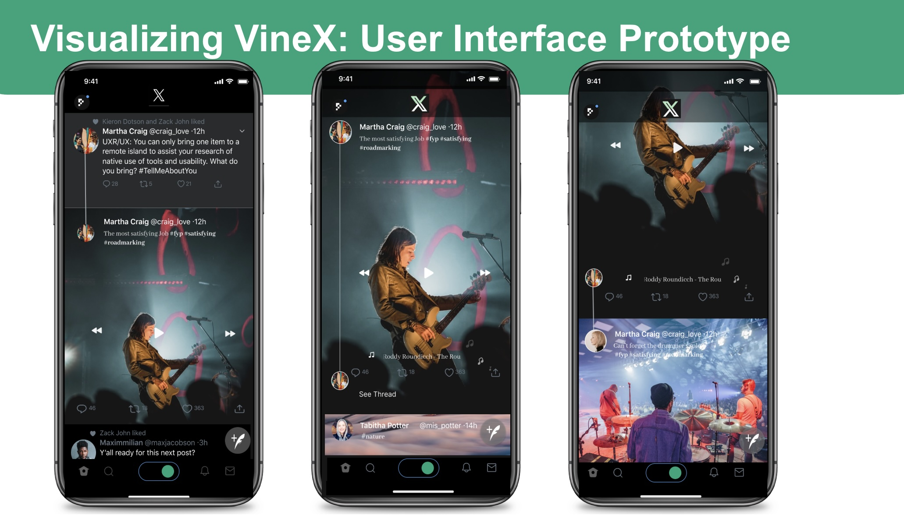

Vine Deserved Better—So We Rebuilt It
Brand Relaunch | Competitive Strategy

There was a time when six seconds was all it took to be hilarious, relatable, or wildly creative. That time belonged to Vine.
Years later, short-form video dominates our screens—but something feels different. The pressure, the pace, the polish. In relaunching Vine as VineX, we set out to bring back what made the original special, and design it for what creators and users actually want today: creativity, community, and freedom from content overload.
Why Vine Still Matters
Vine wasn’t about filters, edits, or algorithms. It was about creativity in constraint—doing something great with almost nothing. That kind of platform encourages a different kind of content: fast, funny, relatable, and made for the moment.
In a world of content overload, that feels more relevant than ever.
What We’re Building With VineX
VineX is a modern platform that brings back what made Vine special—and rethinks what it lacked.
üîπ 10-Second Limit
Just enough to be clever, expressive, or weird—in the best way.
üîπ Collaborative Chains
Multiple creators can link clips into one evolving idea, sparking more community and less competition.
üîπ Casual, Creator-Friendly Vibes
Tools that reduce pressure. Features that reward creativity, not constant output.
üîπ Seasonal Hashtag Projects
Instead of endless trends, we use curated challenges to guide fresh ideas.

A Platform Built for People, Not Just Content
Where the original Vine fell short was in how it treated creators. No monetization plan, no growth support. With VineX, we fixed that:
• Revenue Sharing for sponsored content
• Optional Creator Subscriptions
• Creator-first analytics to inform, not overwhelm
The goal: make it sustainable to be creative again.
Community First, Always
VineX isn’t just a feed—it’s a space. A space where creators and fans connect through shared humor, weird moments, and niche ideas. It’s designed to surface originality, not repetition.
Instead of pushing the loudest voices, we give room for the cleverest ones.
This Isn’t Just a Relaunch. It’s a Rethink.
We didn’t bring Vine back to relive the past. We brought it back because the core idea—a fast, fun, low-pressure space to create—never went out of style. It just needed the right strategy, the right structure, and the right moment.
Now it has all three.